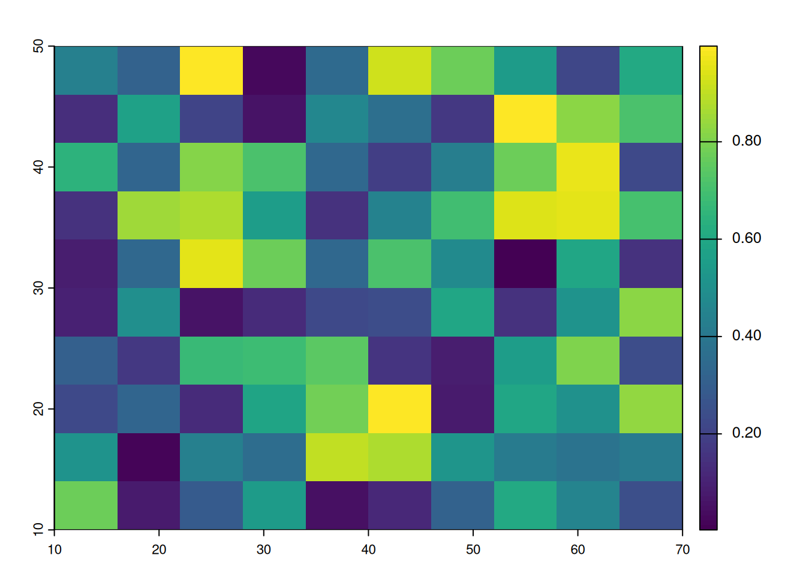
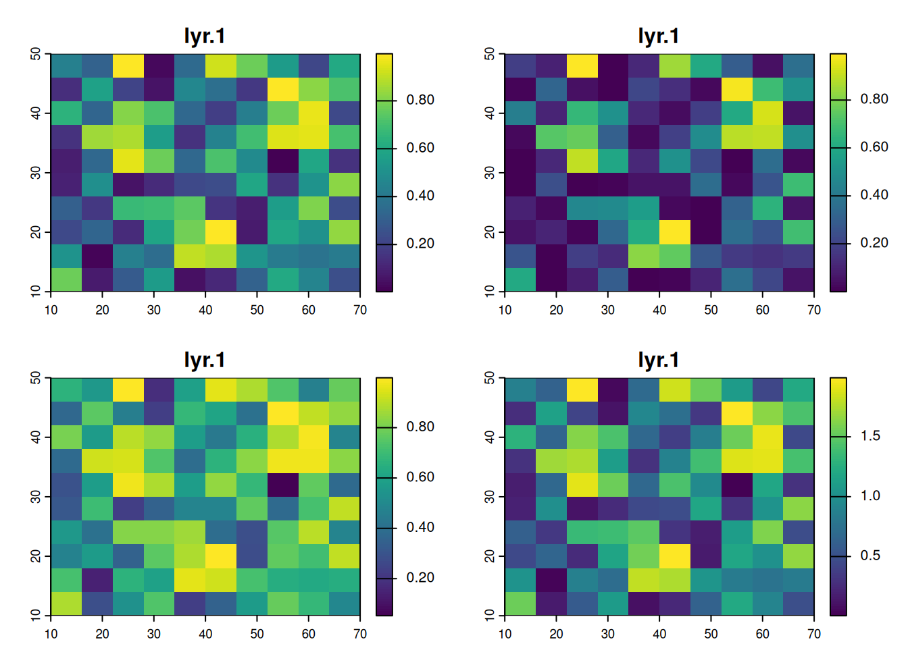

library(sf)
library("rnaturalearth")
library(tidyverse) # Carga, entre otros, ggplot2 y dplyr
library(spData)
# install.packages("spDataLarge", repos = "https://nowosad.r-universe.dev")
library(spDataLarge)
library(terra)2 Datos espaciales
En lo que resta del taller, vamos a utilizar (entre otros) los paquetes que cargamos a continuación. Asegúrate de tenerlos instalados antes de continuar con la ejecución del código. Nótese que el paquete {spDataLarge} hay que instalarlo desde un repositorio específico como se indica en la línea comentada. 1
2.1 El paquete {sf}
2.1.1 Introdución
El modelo de datos vectoriales se basa en ubicar puntos dentro de un sistema de referencia de coordenadas (CRS). Es decir, dado un CRS, mediante las coordenadas de un punto podemos representar características independientes (por ejemplo, la ubicación de un colegio). También podemos unir estos puntos para obtener formas geométricas más complejas, como líneas y polígonos.
En la mayoría de los casos, las geometrías de puntos están definidas en dos dimensiones (X e Y, o latitud y longitud). Si usamos un sistema de tres dimensiones, la tercera dimensión, Z, típicamente representa la altura sobre el nivel del mar.
En R podemos encontrar el paquete {sp} que permite trabajar con datos vectoriales proporcionando la información espacial mediante vértices de polígonos. Mediante la función plot() podemos realizar una representación gráfica estática, aunque un tanto limitada. Haciendo uso de los paquetes {tmap}, {ggplot2} y {ggmap} podemos obtener representaciones estáticas mucho más atracticas. También es posible realizar representaciones dinámicas junto con el paquete {leaflet}.
Sin embargo, {sp} se utliza cada vez menos ya que está siendo reemplazado por el paquete {sf}. Este paquete sigue el estandar simple feature definido por la Open Geospatial Consortium (OGC), una organización sin ánimo de lucro cuya principal función es definir estándares para trabajar con datos espaciales. El paquete {sf} proporciona un sistema de clases para datos vectoriales geográficos. Además, tiene una interfaz de línea de comandos consistente para GEOS y GDAL.
2.1.2 Simple features
El estándar simple features es un modelo común de almacenamiento y acceso para atributos geográficos, creado principalmente para geometrías 2-D (puntos, polígonos, líneas, etc.). Permite conexión con bases de datos geográficas (e.g. PostGIS) y también con Sistemas de Información Geográfica (GIS, por sus siglas), tales como ArcGIS.
En R, el paquete sf da soporte para trabajar con datos representados según el estándar simple features. Los registros de datos espaciales se almacenan en un objeto data.frame o tibble con una columna que contiene la información de geometría a representar. Están soportados los 17 tipos de datos representables con simple features en todas las dimensiones. También tiene interfaces con sistemas externos como GEOS, s2geometry, GDAL o PRØJ para realizar multitud de operaciones sobre distintos tipos de objetos y espacios de coordenadas.
Existe un listado de operaciones soportadas por sf que resume las capacidades completas de este paquete.
En particular la función geom_sf() permite incorporar objetos espaciales geométricos gestionados mediante el paquete sf como una capa más de nuestros gráficos creados con ggplot2. También es totalmente compatible con las funciones del paquete dplyr.
En sf contamos con diferentes funciones para representar todos los tipos de geometrías vectoriales: puntos, líneas, polígonos y sus respectivas versiones “múltiples” (que agrupan entidades del mismo tipo en una única entidad). Así mismo, podemos agrupar varias geometrías en un solo objeto. También es posible realizar la lectura y escritura de datos a través de una interfaz bastante sencilla.
Entre otras de las ventajas que ofrece el paquete {sf} podemos destacar:
Los objetos
sfson dataframe o tibbles, en los que los datos geográficos se encuentran en la última columna llamada geom o geometryLos procesos de lectura y escritura de datos geográficos son rápidos.
Es posible leer y escribir objetos espaciales en BBDD espaciales como PostGIS.
Los nombres de las funciones son consistentes e intuitivos, todos ellos empiezan por el prefijo st_
Las funciones pueden combinarse usando el operador pipe
%>%(o|>en R>=4.1.0)Es compatible con tidyverse.
R pone a nuestra disposición una amplia documentación de ayuda sobre este paquete que se puede encontrar en https://r-spatial.github.io/sf/index.html, o tecleando vignette(package = "sf")en la consola de RStudio2.
2.1.3 La clase sfg. Tipos de geometrías
La clase sfg da soporte a los diferentes tipos de geometrías simple feature en R: punto, línea, polígono (y sus opciones “múltiples”) o colección de geometrías que constituyen los bloques de construcción básico. Aunque la situación habitual será importar un fichero con datos espaciales, conviene conocer el conjunto de funciones que nos permiten crear objetos geométricos de características simples. A pesar de exitir 17 tipos de geometría, aquí nos vamos a centrar en los siete más utilizados:
- Punto: es la geometría base, a partir de ella se construyen las demás. Los puntos son coordenadas en un espacio 2D, 3D o 4D. Si trabajamos en un espacio 3D, la tercera dimensión que añadimos es la altura. En un espacio 4D, la cuarta dimensión es una valor asociado al punto. Para definir un punto usaremos la función
st_point(), a la que le pasaremos por parámetro las coordenadas del punto en forma de vector o tabla.
# Definición de un punto con 2 dimensiones
punto <- st_point(c(2.5, 3.75))
plot(punto, axes = TRUE)- Línea: cualquier línea se define mediante las coordendas de sus vértices, entiendo por vértice cualquier punto en el que se produzca un cambio de pendiente de la recta, no solo los vértices inicial y final. Para la construcción de líneas contamos con la función
st_line()de la claseLinestring. Dicha función espera recibir por parámetro las coordenadas de los vértices de la línea.
x1 <- c(0, 3, 5, 8, 10)
y1 <- c(0, 3, 4, 8, 10)
coords1 <- cbind(x1, y1)
line1 <- st_linestring(coords1)
plot(line1, axes = TRUE)- Polígono: Los polígonos se definen mediante las coordenadas de los vértices de una geometría cerrada. Es decir, las coordenadas del primer vértice y el último deben ser las mismas. La clase que da sustento a la construcción de este tipo de objetos es
Polygonmediante la funciónst_polygon(). Esta función espera que le pasemos por parámetro las coordenadas de los vértices de la geometría. Existe un convenio para dar el orden de los vértices. Para definir el contorno del polígono, debemos proporcionar los vértices en el sentido contrario a las agujas del reloj. Sin embargo, para definir un hueco en un polígono, debemos proporcionar los vértices del hueco en el sentido de las agujas del reloj.
# Definición de 2 polígonos
# Sentido contrario agujas del reloj
x1 <- c(0, 2, 6, 0, 0)
y1 <- c(4, 4, 10, 10, 4)
coords1 <- cbind(x1, y1)
# Sentido agujas del reloj (hueco)
x2 <- c(1, 1, 2, 2, 1)
y2 <- c(5, 6, 6, 5, 5)
coords2 <- cbind(x2, y2)
pol <- st_polygon(list(coords1, coords2))
plot(pol, axes = TRUE)- Multipunto: es una colección de puntos. Para poder considerar un mutipunto como un objeto
sf, todos los puntos que lo componen deben ser diferentes. Podemos definir un multipunto mediante la funciónst_multipoint()pasándole por parámetro el vector de coordenadas de los puntos.
# Definición de varios puntos con 2 dimensiones
cx <- c(2, 4, 6)
cy <- c(4, 7, 8)
coords <- cbind(cx, cy)
mpunto <- st_multipoint(coords)
plot(mpunto, axes = TRUE)- Multilínea: es una colección de líneas. En la clase
Multilinestringencontramos la funciónst_multilinestring(). Si le pasamos por parámetro una lista de varias líneas, construiremos una multilínea.
x2 <- c(2, 1, 1)
y2 <- c(2, 4, 5)
coords2 <- cbind(x2, y2)
line2 <- st_linestring(coords2)
x3 <- c(8, 8)
y3 <- c(8, 5)
coords3 <- cbind(x3, y3)
line3 <- st_linestring(coords3)
# Construcción y representación de multilinestring
lines <- list(line1, line2, line3)
ml <- st_multilinestring(lines)
plot(ml, axes = TRUE)- Multipolígono: es una colección de polígonos. Construimos un multipolígono mediante la función
st_multipolygon()pasándole una lista con los polígonos que van a formar parte del multipolígono.
x1 <- c(0, 2, 6, 0, 0)
y1 <- c(4, 4, 10, 10, 4)
coords1 <- cbind(x1, y1)
pol1 <- st_polygon(list(coords1))
x2 <- c(0, 1, 1, 0, 0)
y2 <- c(2, 2, 3, 3, 2)
coords2 <- cbind(x2, y2)
pol2 <- st_polygon(list(coords2))
mpol <- st_multipolygon(list(pol1, pol2))
plot(mpol, axes = TRUE)- Colección: un objeto
sftambién puede ser una colección de geometrías de cualquiera de los tipos vistos, incluidas las opciones multiples.
# Colección
geometria2 <- st_geometrycollection(list(line1, line3, mpol))
plot(geometria2, axes = TRUE)
Como resumen de esta sección conviene destacar que los objetos sfg se pueden crear a partir de tres tipos de datos básicos:
- Un vector numérico (para el caso de un solo punto)
- Una matriz (para el caso de un conjunto de puntos), donde cada fila representa un punto, un multipunto o una cadena de líneas.
- Una lista (para el caso de una colección de objetos como matrices, multilíneas o colecciones de geometría).
2.1.4 Objetos sfc
Un objeto sfg solo puede contener geometrías simple feature, mientras que un objeto sfc es una columna simple feature. Es decir, se trata de una lista de objetos sfg, que además puede contener información sobre el sistema de referencia de coordenadas que usan. Usando la función st_sfc() podemos construir objetos sfc a partir de objetos sfg del mismo tipo o de distintos tipos. En la mayoría de los casos, un objeto sfc contendrá objetos del mismo tipo de geometría. Por ejemplo, si convertimos objetos sfg de tipo linestring a un objeto sfc, el resultado es un objeto sfc de tipo linestring.
# Objeto sfc a partir de objetos sfg del mismo tipo -> linestring
geom_sfcl <- st_sfc(line1, line3)
geom_sfclGeometry set for 2 features
Geometry type: LINESTRING
Dimension: XY
Bounding box: xmin: 0 ymin: 0 xmax: 10 ymax: 10
CRS: NALINESTRING (0 0, 3 3, 5 4, 8 8, 10 10)LINESTRING (8 8, 8 5)plot(geom_sfcl, axes = TRUE)# Objeto sfc a partir de objetos sfg del mismo tipo -> polygon
geom_sfcp <- st_sfc(pol1, pol2)
geom_sfcpGeometry set for 2 features
Geometry type: POLYGON
Dimension: XY
Bounding box: xmin: 0 ymin: 2 xmax: 6 ymax: 10
CRS: NAPOLYGON ((0 4, 2 4, 6 10, 0 10, 0 4))POLYGON ((0 2, 1 2, 1 3, 0 3, 0 2))plot(geom_sfcp, axes = TRUE)
También es posible crear un objeto sfc a partir de objetos sfg de distintos tipos de geometría:
# Objeto sfc a partir de objetos sfg de distinto tipo
geom_sfc <- st_sfc(line1, line3, mpol)
geom_sfcGeometry set for 3 features
Geometry type: GEOMETRY
Dimension: XY
Bounding box: xmin: 0 ymin: 0 xmax: 10 ymax: 10
CRS: NALINESTRING (0 0, 3 3, 5 4, 8 8, 10 10)LINESTRING (8 8, 8 5)MULTIPOLYGON (((0 4, 2 4, 6 10, 0 10, 0 4)), ((...plot(geom_sfc, axes = TRUE)# Remarquemos la diferencia con una colección de objetos sfg
geom_collection <- st_geometrycollection(list(line1, line3, mpol))
geom_collectionGEOMETRYCOLLECTION (LINESTRING (0 0, 3 3, 5 4, 8 8, 10 10), LINESTRING (8 8, 8 5), MULTIPOLYGON (((0 4, 2 4, 6 10, 0 10, 0 4)), ((0 2, 1 2, 1 3, 0 3, 0 2))))plot(geom_collection, axes = TRUE)Como se ha podido observar en los ejemplos anteriores, el valor predeterminado del sistema de referencia de coordenadas (CRS) es NA. Podemos verificarlo mediante la función st_crs().
st_crs(geom_sfc)Coordinate Reference System: NATodas las geometrías de un objeto sfc deben tener el mismo CRS. Podemos especificar el sistema de referencia de coordenadas al construir el objeto mediante el argumento crs de st_sfc().
# Objeto sfc a partir de objetos sfg de distinto tipo y especificamos el CRS
geom_sfc_crs <- st_sfc(line1, line3, mpol, crs = "EPSG:4326")
st_crs(geom_sfc_crs)Coordinate Reference System:
User input: EPSG:4326
wkt:
GEOGCRS["WGS 84",
ENSEMBLE["World Geodetic System 1984 ensemble",
MEMBER["World Geodetic System 1984 (Transit)"],
MEMBER["World Geodetic System 1984 (G730)"],
MEMBER["World Geodetic System 1984 (G873)"],
MEMBER["World Geodetic System 1984 (G1150)"],
MEMBER["World Geodetic System 1984 (G1674)"],
MEMBER["World Geodetic System 1984 (G1762)"],
MEMBER["World Geodetic System 1984 (G2139)"],
ELLIPSOID["WGS 84",6378137,298.257223563,
LENGTHUNIT["metre",1]],
ENSEMBLEACCURACY[2.0]],
PRIMEM["Greenwich",0,
ANGLEUNIT["degree",0.0174532925199433]],
CS[ellipsoidal,2],
AXIS["geodetic latitude (Lat)",north,
ORDER[1],
ANGLEUNIT["degree",0.0174532925199433]],
AXIS["geodetic longitude (Lon)",east,
ORDER[2],
ANGLEUNIT["degree",0.0174532925199433]],
USAGE[
SCOPE["Horizontal component of 3D system."],
AREA["World."],
BBOX[-90,-180,90,180]],
ID["EPSG",4326]]2.1.5 La clase sf
En las secciones anteriores hemos mostrado como se construyen objetos puramente geométricos, objetos sfg y sfc, que solo almancen información geográfica (coordenadas). A estos objetos podemos agregarles otras características o atributos. Pongamos un ejemplo, vamos a asociarle al punto de Londres una temperatura de 25 °C para el 21 de junio de 2017. Por un lado vamos a tener la geometría (las coordenadas) y, por otro lado, tres atributos con tres clases diferentes (nombre del lugar, temperatura y fecha). Mediante un objeto de la clase sf podemos representar la combinación de estos atributos (data.frame) junto con la columna de geometría (sfc). Para ello contamos con la función st_sf().
lnd_point <- st_point(c(0.1, 51.5)) # Objeto sfg
lnd_geom <- st_sfc(lnd_point, crs = 4326) # Objeto sfc
lnd_attrib <- data.frame( # Objeto data.frame
name = "London",
temperature = 25,
date = as.Date("2017-06-21")
)
lnd_sf <- st_sf(lnd_attrib, geometry = lnd_geom) # Objeto sfEn el siguiente fragmento de código podemos ver que los objetos sf en realidad tienen dos clases, sf y data.frame. Los objetos sf son data frames, pero con atributos espaciales almacenados en una columna de lista, generalmente llamada geometry. Por este motivo, un objeto sf puede tratarse y se comporta como un data.frame.
lnd_sfSimple feature collection with 1 feature and 3 fields
Geometry type: POINT
Dimension: XY
Bounding box: xmin: 0.1 ymin: 51.5 xmax: 0.1 ymax: 51.5
Geodetic CRS: WGS 84
name temperature date geometry
1 London 25 2017-06-21 POINT (0.1 51.5)class(lnd_sf)[1] "sf" "data.frame"2.1.6 Lectura de simple feature
Los formatos de ficheros de datos espaciales más comunes son shapefile y GEOJSON. El formato shapefile, desarrollado por la compañía ESRI (se dedica a la creacción y comercialización de software para Sistemas de Información Geográfica) es muy utilizado. Sin embargo, GEOJSON se ha centrado sobre todo en aplicaciones del entorno web. GeoPackage (GPKG) es otro formato definido por el Open Geospatial Consortium (OGC).
En un fichero shapefile se almacena la localización de elementos geográficos y las características o atributos asociados a ellos, en formato vectorial. Lo constituyen un conjunto de ficheros, entre los que podemos destacar:
- .shp: es el archivo que almacena los objetos geométricos
- .shx: es el archivo que almacena el índice de los objetos geométricos
- .dbf: es el archivo que contiene la tabla de los atributos de los objetos geométricos
- .prj: este archivo contiene información del sistema de coordenadas
Desde sf podemos realizar la lectura de un fichero shapefile o GPKG mediante las funciones st_read() o read_sf(). El primer argumento que necesitan estas funciones, es una cadena de texto que contenga la ruta en la que se encuentra el fichero a leer. Desde sf es posible leer muchos tipos de ficheros de datos vectoriales, ya que de forma automática detecta la extensión del archivo y carga los drivers necesarios para interpretar la información que contiene el fichero. A continuación podremos realizar una simple representación estática mediante la función plot().
vector_filepath <- system.file("shapes/world.gpkg", package = "spData")
world <- read_sf(vector_filepath, quiet = TRUE)
# Equivalente a: world <- st_read(vector_filepath, as_tibble = TRUE)
plot(world)Warning: plotting the first 9 out of 10 attributes; use max.plot = 10 to plot
all
Estas funciones también permiten leer solo partes de un archivo en la RAM. A continuación mostramos un par de ejemplos de como leer una porción de un archivo y una sola línea mediante el empleo de una consulta SQL. En el primer caso, a través de la consulta le indicamos que queremos obtener todas las columnas (SELECT *) de la capa “world” para la cual continent es igual a “Europe”. En el segundo caso, nos quedamos solo con la capa correspondiente a name_long = "Spain":
# Podemos seleccionar un continente
europe <- st_read(vector_filepath,
query = 'SELECT * FROM "world" WHERE continent = "Europe"')Reading query `SELECT * FROM "world" WHERE continent = "Europe"'
from data source `/home/jfelipe/R/x86_64-pc-linux-gnu-library/4.5/spData/shapes/world.gpkg'
using driver `GPKG'
Simple feature collection with 39 features and 10 fields
Geometry type: MULTIPOLYGON
Dimension: XY
Bounding box: xmin: -180 ymin: 2.053389 xmax: 180 ymax: 81.2504
Geodetic CRS: WGS 84head(europe)Simple feature collection with 6 features and 10 fields
Geometry type: MULTIPOLYGON
Dimension: XY
Bounding box: xmin: -180 ymin: 2.053389 xmax: 180 ymax: 81.2504
Geodetic CRS: WGS 84
iso_a2 name_long continent region_un subregion
1 RU Russian Federation Europe Europe Eastern Europe
2 NO Norway Europe Europe Northern Europe
3 FR France Europe Europe Western Europe
4 SE Sweden Europe Europe Northern Europe
5 BY Belarus Europe Europe Eastern Europe
6 UA Ukraine Europe Europe Eastern Europe
type area_km2 pop lifeExp gdpPercap
1 Sovereign country 17018507.4 143819666 70.74366 25284.586
2 Sovereign country 397994.6 NA NA NA
3 Country 644847.9 NA NA NA
4 Sovereign country 450581.6 9696110 82.25366 44167.632
5 Sovereign country 208969.8 9474511 72.97073 17944.210
6 Sovereign country 572549.0 45271947 71.18659 8243.474
geom
1 MULTIPOLYGON (((180 70.8322...
2 MULTIPOLYGON (((15.14282 79...
3 MULTIPOLYGON (((-51.6578 4....
4 MULTIPOLYGON (((11.02737 58...
5 MULTIPOLYGON (((28.17671 56...
6 MULTIPOLYGON (((35.01266 45...plot(europe)# Podemos seleccionar un pais
spain <- read_sf(vector_filepath,
query = 'SELECT * FROM "world" WHERE name_long = "Spain"')
head(spain)Simple feature collection with 1 feature and 10 fields
Geometry type: MULTIPOLYGON
Dimension: XY
Bounding box: xmin: -9.392884 ymin: 35.94685 xmax: 3.039484 ymax: 43.74834
Geodetic CRS: WGS 84
# A tibble: 1 × 11
iso_a2 name_long continent region_un subregion type area_km2 pop lifeExp
<chr> <chr> <chr> <chr> <chr> <chr> <dbl> <dbl> <dbl>
1 ES Spain Europe Europe Southern E… Sove… 502306. 4.65e7 83.2
# ℹ 2 more variables: gdpPercap <dbl>, geom <MULTIPOLYGON [°]>plot(spain)Warning: plotting the first 9 out of 10 attributes; use max.plot = 10 to plot
all2.1.7 Representación estática
Los mapas básicos se crean en sf con plot(). Por defecto, esta opción crea un gráfico de varios paneles, en los que, cada panel contiene un gráfico secundario correspondiente a la representación de una variable del objeto. Si la variable que se está representando en un panel es continua, se incluirá por defecto una leyenda o “clave” con un color continuo si el objeto a trazar tiene una sola variable. Los colores también se pueden configurar con col=, aunque esto no creará una paleta continua o una leyenda. Utilizamos ahora los datos de países del paquete {rnaturalearth}.
world <- ne_countries(scale = "medium", returnclass = "sf")
class(world)[1] "sf" "data.frame"names(world) [1] "featurecla" "scalerank" "labelrank" "sovereignt" "sov_a3"
[6] "adm0_dif" "level" "type" "tlc" "admin"
[11] "adm0_a3" "geou_dif" "geounit" "gu_a3" "su_dif"
[16] "subunit" "su_a3" "brk_diff" "name" "name_long"
[21] "brk_a3" "brk_name" "brk_group" "abbrev" "postal"
[26] "formal_en" "formal_fr" "name_ciawf" "note_adm0" "note_brk"
[31] "name_sort" "name_alt" "mapcolor7" "mapcolor8" "mapcolor9"
[36] "mapcolor13" "pop_est" "pop_rank" "pop_year" "gdp_md"
[41] "gdp_year" "economy" "income_grp" "fips_10" "iso_a2"
[46] "iso_a2_eh" "iso_a3" "iso_a3_eh" "iso_n3" "iso_n3_eh"
[51] "un_a3" "wb_a2" "wb_a3" "woe_id" "woe_id_eh"
[56] "woe_note" "adm0_iso" "adm0_diff" "adm0_tlc" "adm0_a3_us"
[61] "adm0_a3_fr" "adm0_a3_ru" "adm0_a3_es" "adm0_a3_cn" "adm0_a3_tw"
[66] "adm0_a3_in" "adm0_a3_np" "adm0_a3_pk" "adm0_a3_de" "adm0_a3_gb"
[71] "adm0_a3_br" "adm0_a3_il" "adm0_a3_ps" "adm0_a3_sa" "adm0_a3_eg"
[76] "adm0_a3_ma" "adm0_a3_pt" "adm0_a3_ar" "adm0_a3_jp" "adm0_a3_ko"
[81] "adm0_a3_vn" "adm0_a3_tr" "adm0_a3_id" "adm0_a3_pl" "adm0_a3_gr"
[86] "adm0_a3_it" "adm0_a3_nl" "adm0_a3_se" "adm0_a3_bd" "adm0_a3_ua"
[91] "adm0_a3_un" "adm0_a3_wb" "continent" "region_un" "subregion"
[96] "region_wb" "name_len" "long_len" "abbrev_len" "tiny"
[101] "homepart" "min_zoom" "min_label" "max_label" "label_x"
[106] "label_y" "ne_id" "wikidataid" "name_ar" "name_bn"
[111] "name_de" "name_en" "name_es" "name_fa" "name_fr"
[116] "name_el" "name_he" "name_hi" "name_hu" "name_id"
[121] "name_it" "name_ja" "name_ko" "name_nl" "name_pl"
[126] "name_pt" "name_ru" "name_sv" "name_tr" "name_uk"
[131] "name_ur" "name_vi" "name_zh" "name_zht" "fclass_iso"
[136] "tlc_diff" "fclass_tlc" "fclass_us" "fclass_fr" "fclass_ru"
[141] "fclass_es" "fclass_cn" "fclass_tw" "fclass_in" "fclass_np"
[146] "fclass_pk" "fclass_de" "fclass_gb" "fclass_br" "fclass_il"
[151] "fclass_ps" "fclass_sa" "fclass_eg" "fclass_ma" "fclass_pt"
[156] "fclass_ar" "fclass_jp" "fclass_ko" "fclass_vn" "fclass_tr"
[161] "fclass_id" "fclass_pl" "fclass_gr" "fclass_it" "fclass_nl"
[166] "fclass_se" "fclass_bd" "fclass_ua" "geometry" # head(world) # Descomentar para imprimir vista inicial
plot(world[3:6])plot(world["pop_est"])En ocasiones resulta útil representar solo una porción del data frame original.
world_asia <- world[world$continent == "Asia", ]
# head(world_asia) # Descomentar para imprimir vista
plot(world_asia)Warning: plotting the first 9 out of 168 attributes; use max.plot = 168 to plot
allplot(world_asia["pop_est"])En el siguiente ejemplo mostramos como destacar un pais sobre este continente.
india <- world[world$name_long == "India", ]
plot(st_geometry(india),
expandBB = c(0, 0.2, 0.1, 1),
col = "gray",
lwd = 3)
plot(world_asia[0], add = TRUE)
La función plot() es rápida de ejecutar y requiere pocas líneas de código. Sin embargo, las gráficas que genera son un tanto simples. Podemos conseguir representaciones estáticas mucho más elaboradas si usamos la función geom_sf() del paquete {ggplot2}.
ggplot(data = world) +
geom_sf(aes(fill = pop_est)) +
scale_fill_gradient(low = "lightblue", high = "blue")2.2 Datos raster y cubos de datos vectoriales
- El paquete
starsofrece soporte para representación y manejo de datos raster (por ejemplo, de imágenes satelitales) así como cubos de datos vectoriales (vector datacubes), tal y como muestra la Figura 2.1.

- El paquete
terraincluye numerosas herramientas para procesado y análisis de datos espaciales, incluyendo manipulación de objetos raster.
2.3 El paquete {terra}
2.3.1 Introdución
El modelo de datos ráster se utiliza comúnmente para representar fenómenos espacialmente continuos como, por ejemplo, la temperatura o la densidad de población. Este modelo represetna el mundo real mediante una cuadrícula de rectángulos de igual tamaño (denominados celdas o, en el contexto de la teledetección por satélite, píxeles).
Generalmente, los datos raster constan de un encabezado y una matriz (con filas y columnas) cuyas celdas están igualmente espaciadas. El encabezado define el sistema de referencia de coordenadas, la extensión y el origen. Lo habitual es que el origen (o punto de partida) sea la coordenada de la esquina inferior izquierda de la matriz, aunque algunos paquetes, como el paquete {terra}, designan para este fin la esquina superior izquierda. El encabezado define la extensión a través del número de columnas, el número de filas y la resolución del tamaño de celda. Por lo tanto, comenzando desde el origen, podemos acceder fácilmente y modificar cada celda usando el ID de una celda o especificando explícitamente las filas y columnas.
La principal ventaja de esta representación matricial es que evita almacenar explícitamente las coordenadas de las cuatro esquinas (de hecho, solo almacena una coordenada, la del origen) de cada celda, a diferencia del caso de los polígonos vectoriales rectangulares. Ésto, junto con el álgebra de mapas, hacen que el procesamiento de ráster sea mucho más eficiente y rápido que el procesamiento de datos vectoriales. Sin embargo, a diferencia de los datos vectoriales, la celda de una capa ráster solo puede contener un valor, que puede ser numérico o categórico.
Aunque el modelo de datos ráster se utiliza para representar fenómenos continuos, también es posible representar características discretas como el suelo o las clases de cobertura terrestre, la única diferencia es que, en este caso, los bordes discretos de estas características se vuelven borrosos. En general, cuando se trabaja con características discretas, resulta mucho más adecuada una representación vectorial.
R cuenta con varios paquetes capaces de leer y procesar datos ráster, siendo los más utilizados {terra} y {stars}. En este curso, nos centramos en el paquete {terra}. Como características principales podemos destacar:
- Fue creado por Robert Hijmans, al igual que su predecesor, el paquete {raster}.
- Trabaja con el modelo de datos ráster de cuadrículas regulares.
- Puede manejar rasters de una o varias capas, teniendo en cuenta que todos los elementos deben tener las mismas dimensiones espaciales y extensión.
- Puede leer datos ráster en la memoria o simplemente leer sus metadatos. Generalmente, esta operación se hace automáticamente en función del tamaño del archivo de entrada.
- Usa su propia clase de objetos para datos vectoriales, llamada
SpatVector.
El paquete {terra} ofrece un amplio conjunto de funciones para crear, leer, exportar, manipular y procesar datasets ráster. Su funcionalidad, en gran medida, es la misma que la del paquete {raster}, pero con la ventaja añadida de que las funciones de {terra} suelen ser más eficientes, desde el punto de vista computacional, que sus equivalentes en {raster}. Al igual que con {sf} y {sp}, se pueden realizar traducciones sin problemas entre los dos tipos de objetos para garantizar la compatibilidad con versiones anteriores.
2.3.2 SpatRaster
A diferencia de los datos vectoriales, en los datos ráster la geometría no se almacena explícitamente como coordenadas. Se establece implícitamente conociendo la extensión espacial y el número de filas y columnas en las que se divide el área. A partir de la extensión y el número de filas y columnas, se puede calcular el tamaño de las celdas ráster (resolución espacial). Si bien las celdas ráster se pueden considerar como un conjunto de polígonos regulares, sería muy ineficiente representar los datos de esa manera, ya que las coordenadas de cada celda tendrían que almacenarse explícitamente. Hacerlo también aumentaría drásticamente el tiempo de procesamiento.
Vamos a ver un ejemplo de creación de un objeto SpatRaster desde cero, aunque lo normal es crear estos objetos a partir de un archivo.
# Indicamos numero de columnas, filas y extension
r <- rast(ncol = 10, nrow = 10,
xmin = 10, xmax = 70,
ymin = 10, ymax = 50)
rclass : SpatRaster
size : 10, 10, 1 (nrow, ncol, nlyr)
resolution : 6, 4 (x, y)
extent : 10, 70, 10, 50 (xmin, xmax, ymin, ymax)
coord. ref. : lon/lat WGS 84 (CRS84) (OGC:CRS84) # ¿¿¿Que ocurre???
plot(r)
Como puede observarse, el objeto r solo tiene la geometría de un conjunto de datos ráster. Es decir, le hemos proporcionado una ubicación y resolución, pero no tiene valores asociados. Vamos a asignarle algunos valores. Para ello generamos ncell valores aleatorios a partir de una distribución uniforme y se los asignamos a nuestro ráster r mediante la función values().
# Asignación de valores
values(r) <- runif(ncell(r))
rclass : SpatRaster
size : 10, 10, 1 (nrow, ncol, nlyr)
resolution : 6, 4 (x, y)
extent : 10, 70, 10, 50 (xmin, xmax, ymin, ymax)
coord. ref. : lon/lat WGS 84 (CRS84) (OGC:CRS84)
source(s) : memory
name : lyr.1
min value : 0.00972476
max value : 0.99732257 plot(r)
Una forma sencilla de crear un objeto multi-layer es utilizando el método c(). Al representar el ráster multi-layer, obtendremos una gráfica por cada capa.
r2 <- r * r
r3 <- sqrt(r)
r4 <- r + r
s <- c(r, r2, r3, r4)
sclass : SpatRaster
size : 10, 10, 4 (nrow, ncol, nlyr)
resolution : 6, 4 (x, y)
extent : 10, 70, 10, 50 (xmin, xmax, ymin, ymax)
coord. ref. : lon/lat WGS 84 (CRS84) (OGC:CRS84)
source(s) : memory
names : lyr.1, lyr.1, lyr.1, lyr.1
min values : 0.00972476, 9.457095e-05, 0.0986142, 0.01944952
max values : 0.99732257, 9.946523e-01, 0.9986604, 1.99464515 plot(s)
Cuando añadimos varias capas, es conveniente darles un nombre diferente mediante la función names().
names(s) <- c('layer1', 'layer2', 'layer3', 'layer4')
sclass : SpatRaster
size : 10, 10, 4 (nrow, ncol, nlyr)
resolution : 6, 4 (x, y)
extent : 10, 70, 10, 50 (xmin, xmax, ymin, ymax)
coord. ref. : lon/lat WGS 84 (CRS84) (OGC:CRS84)
source(s) : memory
names : layer1, layer2, layer3, layer4
min values : 0.00972476, 9.457095e-05, 0.0986142, 0.01944952
max values : 0.99732257, 9.946523e-01, 0.9986604, 1.99464515 plot(s)Otras funciones interesantes a la hora de construir nuestro propio ráster o de tabajar con objetos ráster son:
ncol(): indica el número de columnasnrow()indica el número de filasncell(): indica el número de celdasres(): indica la resolución en X e Ydim(): indica la dimensión (número de columnas, filas y capas)
ncol(s) [1] 10nrow(s)[1] 10ncell(s)[1] 100res(s)[1] 6 4dim(s)[1] 10 10 4Para más información, podeís consultar la documentación oficial o la ayuda de RStudio.
2.3.3 Lectura de datos raster
Al igual que los datos vectoriales, los datos ráster vienen en muchos formatos de archivo y algunos de ellos admiten archivos multicapa. Uno de estos formatos es el archivo de imagen TIF. La función rast() de {terra} nos permite leer ficheros de datos ráster tanto de una capa como de varias. Veamos algunos ejemplos usando los datasets de {spDataLarge}.
# Fichero raster de 1 capa
raster_filepath <- system.file("raster/srtm.tif",
package = "spDataLarge")
single_layer <- rast(raster_filepath)
single_layerclass : SpatRaster
size : 457, 465, 1 (nrow, ncol, nlyr)
resolution : 0.0008333333, 0.0008333333 (x, y)
extent : -113.2396, -112.8521, 37.13208, 37.51292 (xmin, xmax, ymin, ymax)
coord. ref. : lon/lat WGS 84 (EPSG:4326)
source : srtm.tif
name : srtm
min value : 1024
max value : 2892 plot(single_layer)
title(main = "Zion National Park")# Fichero raster de 4 capas
multilayer_filepath <- system.file("raster/landsat.tif",
package = "spDataLarge")
multilayer_rast <- rast(multilayer_filepath)
multilayer_rastclass : SpatRaster
size : 1428, 1128, 4 (nrow, ncol, nlyr)
resolution : 30, 30 (x, y)
extent : 301905, 335745, 4111245, 4154085 (xmin, xmax, ymin, ymax)
coord. ref. : WGS 84 / UTM zone 12N (EPSG:32612)
source : landsat.tif
names : landsat_1, landsat_2, landsat_3, landsat_4
min values : 7550, 6404, 5678, 5252
max values : 19071, 22051, 25780, 31961 plot(multilayer_rast)2.3.4 Representación estática
Aunque ya hemos mostrado algún ejemplo de representación gráfica, en esta sección completaremos algunos aspectos más sobre este tema. Vamos a trabajar con el dataset de Luxemburgo del paquete {terra}. Empezaremos realizando una representación sencilla de la geometría, que creamos con la función vect().
filename <- system.file("ex/lux.shp",
package = "terra")
basename(filename)[1] "lux.shp"raster_file <- vect(filename)
raster_file class : SpatVector
geometry : polygons
dimensions : 12, 6 (geometries, attributes)
extent : 5.74414, 6.528252, 49.44781, 50.18162 (xmin, xmax, ymin, ymax)
source : lux.shp
coord. ref. : lon/lat WGS 84 (EPSG:4326)
names : ID_1 NAME_1 ID_2 NAME_2 AREA POP
type : <num> <chr> <num> <chr> <num> <num>
values : 1 Diekirch 1 Clervaux 312 1.808e+04
1 Diekirch 2 Diekirch 218 3.254e+04
1 Diekirch 3 Redange 259 1.866e+04plot(raster_file)Al contener información sobre varias variables, podemos elegir qué variable queremos ver representada sobre la geometría. Por ejemplo, vamos a representar los valores de población y de área.
library("viridis")Cargando paquete requerido: viridisLite# Representación de una variable
plot(raster_file, "POP")# Representación de varias variables
plot(raster_file, c("POP", "AREA"), col = viridis(10))También podemos hacer una matriz de figuras con la función par() y representar las gráficas ajustando el espaciado, colocando las leyendas dentro del área del mapa y poniendo el texto del eje Y en horizontal.
par(mfrow = c(1,2))
m <- c(3.1, 3.1, 2.1, 2.1)
plot(raster_file, "POP", col = viridis(10), mar = m,
plg = list(x = "topright"),
pax = list(las = 1))
plot(raster_file, "AREA", col = viridis(10), mar = m,
plg = list(x = "topright", cex=.75),
pax = list(las = 1))La visualización predeterminada de un SpatRaster de una sola capa depende del tipo de datos, pero siempre habrá una leyenda.
par(mfrow = c(1, 1))
f <- system.file("ex/elev.tif",
package = "terra")
r <- rast(f)
rclass : SpatRaster
size : 90, 95, 1 (nrow, ncol, nlyr)
resolution : 0.008333333, 0.008333333 (x, y)
extent : 5.741667, 6.533333, 49.44167, 50.19167 (xmin, xmax, ymin, ymax)
coord. ref. : lon/lat WGS 84 (EPSG:4326)
source : elev.tif
name : elevation
min value : 141
max value : 547 plot(r)Podemos realizar un tipo diferente de representación, por ejemplo, por intervalos.
m <- c(3.1, 3.1, 1.1, 1.1)
plot(r, type = "interval",
plg = list(x = "topright"),
mar = m)2.4 Datos de España
Tenemos la enorme suerte de que en nuestro país existe una comunidad muy activa que desarrolla múltiples paquetes R con información cartográfica, datos climáticos y de otra índole, ya preparados y perfectamente integrados con el resto de paquetes populares como ggplot2. Destacan:
mapSpain: facilita la creación de mapas a diferentes niveles administrativos de España. Incluye muchas herramientas, como por ejemplo una función para representar las regiones como cuadrados o hexágonos de forma esquemática, siguiendo una idea parecida a los gráficos creados por el paquetestatebins. Estos son una alternativa simplificada a los mapas de coropletas.climaemet: permite utilizar la API de datos de la AEMET, integrándolos de forma directa en nuestro flujo de trabajo con R. Es imprescindible conseguir previamente una API KEY
# Instala los paquetes sf y climaemet previamente
# Ejecuta una sola vez para obtener tu API key:
# aemet_api_key(apikey, overwrite = FALSE, install = FALSE)
library(climaemet)
library(ggplot2)
library(dplyr)
all_stations <- aemet_daily_clim(
start = "2021-01-08", end = "2021-01-08",
return_sf = TRUE
)
ggplot(all_stations) +
geom_sf(aes(colour = tmed), shape = 19, size = 2, alpha = 0.95) +
labs(
title = "Average temperature in Spain",
subtitle = "8 Jan 2021",
color = "Max temp.\n(celsius)",
caption = "Source: AEMET"
) +
scale_colour_gradientn(
colours = hcl.colors(10, "RdBu", rev = TRUE),
breaks = c(-10, -5, 0, 5, 10, 15, 20),
guide = "legend"
) +
theme_bw() +
theme(
panel.border = element_blank(),
plot.title = element_text(face = "bold"),
plot.subtitle = element_text(face = "italic")
)airqualityES: datos diarios de medidas de calidad del aire en España en un periodo de 18 años (2001-2018), incluyendo varios agentes contaminantes. Los datos son publicados por el Gobierno de España en abierto.
El resto se pueden instalar desde CRAN usando el panel Packages de RStudio o la función
install.packagescon el repositorio por defecto. Algunos paquetes tienen muchas dependencias y pueden tardar. Si después de la instalación alguno de los paquetes no se carga, comprueba que en la instalación no se produjeron errores.↩︎Una versión mejor de las viñetas, como indica el autor, se encuentran en https://r-spatial.github.io/sf/articles/↩︎